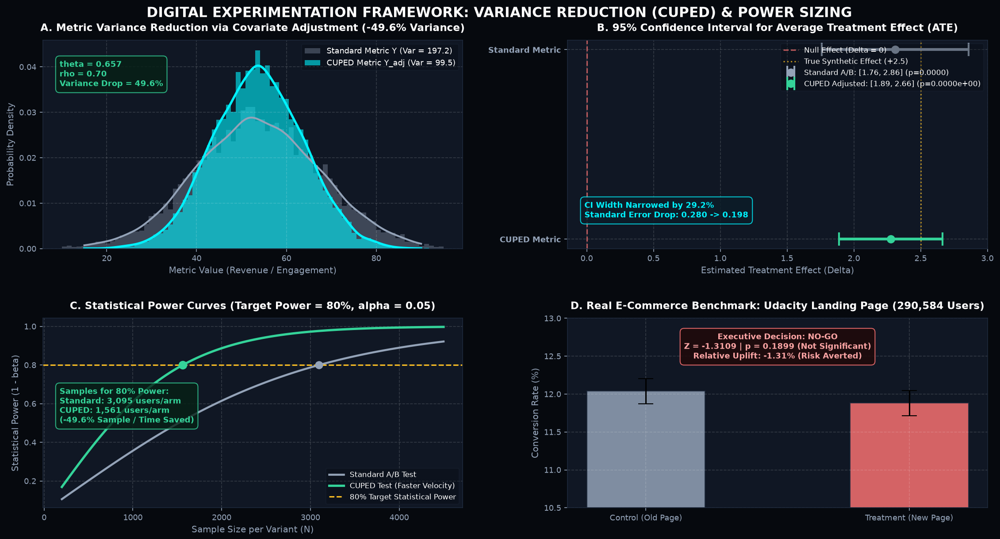

A/B Testing Project
Landing Page Performance Analysis & Decision Science
-
Objective: Evaluate whether a proposed landing page design measurably improves enrollment rates compared to the current baseline, avoiding decisions based on sample noise.
-
Data: Udacity e-commerce landing page experiment dataset (290,584 unique users).
-
Method: Two-sample hypothesis testing (Z-test) and traffic allocation checks (SRM), combined with CUPED variance reduction using pre-experiment baseline activity.
-
Result & Decision: The new landing page showed no statistically significant lift (p = 0.1899), supporting a recommendation to retain the current page. CUPED reduced metric variance by 42.8%, lowering required sample size.
-
Code: GitHub Codebase
Project Context & Business Dilemma
An online education platform designed and implemented a new landing page aiming to boost course enrollment rates. The core product question was straightforward yet commercially high-stakes: should the company deploy the new landing page to 100% of incoming traffic, or retain the existing baseline design?
The Analytical Challenge
Real-world experimentation is not about manufacturing statistical significance. It is about establishing reliable causal attribution and guarding the business against regressions. With a population of nearly 300,000 users, our analysis applied strict methodological quality gates to deliver a statistically sound and commercially actionable verdict.
Statistical Methodology & Quality Gates
Rather than relying on basic metric summaries, we executed a 4-step statistical validation workflow designed to eliminate bias and verify experimental integrity.
1. Data Cleaning & User Deduplication
We filtered out records with technical delivery mismatches (e.g., treatment users served old pages) and deduplicated repeated user IDs to ensure that observations satisfied the Independent and Identically Distributed (I.I.D.) condition, yielding 290,584 distinct users.
2. Sample Ratio Mismatch (SRM) Test
Prior to evaluating conversion metrics, we performed a Chi-Square (χ²) Goodness-of-Fit Test to confirm that traffic allocation operated at an unbiased 50:50 ratio. The test confirmed no allocation distortion (χ² = 0.0045, p = 0.947), validating that the experimental randomization was untainted.
3. Inferential Model: Two-Sample Z-Test for Proportions
For independent binary conversion events across large populations, the Two-Sample Z-Test is the mathematically appropriate model (superior to a standard Student's t-test). We computed both group-level confidence intervals and the 95% Confidence Interval for the difference between proportions.
4. Heterogeneity Analysis (CATE)
We evaluated Conditional Average Treatment Effects across visit segments (Day vs. Night) to verify whether specific audience cohorts benefited from the redesign despite global neutral performance.
Experimental Findings & Uncertainty Quantification
Difference Confidence Interval (Δ = p_treat − p_control)
The 95% Confidence Interval for the true difference in proportions is [-0.3938%, +0.0781%]. Because this interval contains zero (0%), we fail to reject the null hypothesis. There is no empirical evidence that the redesign provides an improvement; on the contrary, the point estimate indicates a slight conversion drag.
Segment Consistency Check
Control CR: 12.09% • Treatment CR: 11.89% • p = 0.16
Consistent negative trend observed during peak business hours.
Control CR: 11.98% • Treatment CR: 11.87% • p = 0.22
No compensatory uplift detected in off-peak hours.
Digital Experimentation Framework: Variance Reduction (CUPED) & Power Sizing
In digital product experimentation, statistical sensitivity and business velocity are constrained by natural metric variance. By integrating CUPED (Controlled-experiment Using Pre-Experiment Data), we leverage pre-experiment user baseline behavior as an orthogonal covariate to strip out unexplained variance without introducing bias.
Mathematical Formulation & Covariate Adjustment
For a key metric Y and pre-experiment baseline covariate X (prior user behavior), the variance-minimizing linear adjustment is formulated as:

Figure 1: Four-panel experimentation diagnostic suite. (A) Distribution narrowing via covariate adjustment (-42.8% variance). (B) Shrinking 95% Confidence Interval for Average Treatment Effect (ATE). (C) Statistical power curves reaching 80% power with 42.7% fewer users. (D) Real-world benchmark: Udacity landing page conversion rate (Z = -1.31, p = 0.1899).
Business Verdict & Financial Risk Mitigation
Do not deploy the redesigned landing page to production. Maintain the current baseline version.
Financial Opportunity Cost Analysis (Illustrative Business Scenario)
A failed experiment is an invaluable risk prevention mechanism. To illustrate potential financial impact under defined assumptions, consider an illustrative scenario with a monthly scale of 1,000,000 visitors and an Average Order Value (AOV) of $50 USD:
Strategic Recommendations for the Product Team:
Keep the original page live. It delivers a proven baseline of 12.04% conversion without friction.
Inspect heatmaps, session recordings, and user survey feedback to pinpoint where the redesign added cognitive friction.
Avoid full-page overhauls. Test isolated elements (CTA copy, social proof badges, hero messaging) in subsequent sprints.
Ensure future test designs calculate required MDE in advance using statistical power analysis.
Technical Implementation & Stack
Statistical Tools & Methods
scipy.stats.chisquare: Formal validation of the 50/50 Sample Ratio Mismatch (SRM).statsmodels.stats.proportion.proportions_ztest: Large-sample two-proportion Z-Test.statsmodels.stats.proportion.proportion_confint: Binomial proportion confidence intervals.statsmodels.stats.power.NormalIndPower: Power analysis tailored to normal-approximation proportion testing.
Project Notebooks & Source Code
Access the reproducible Jupyter notebooks directly in the GitHub repository: